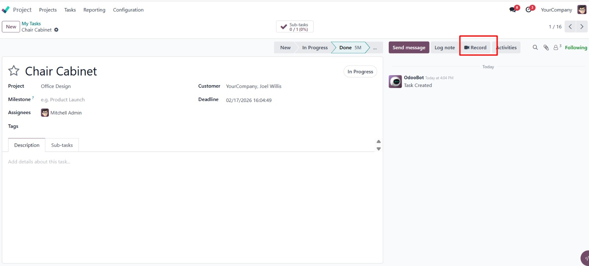
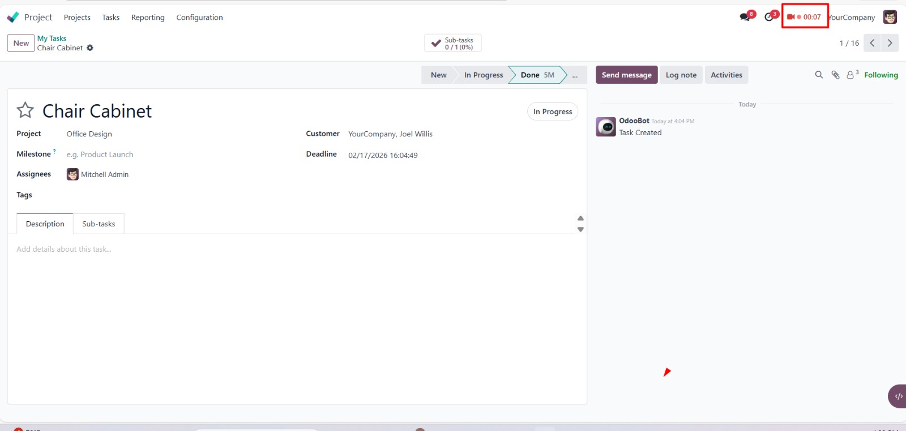
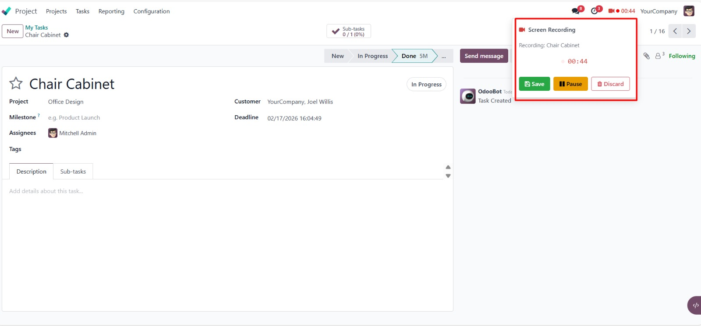
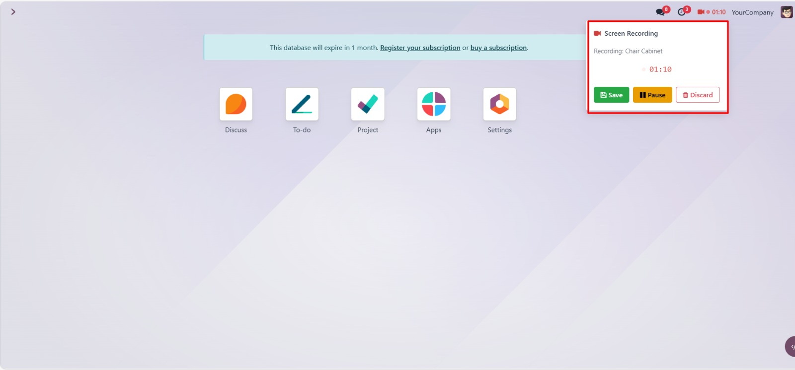

Record Your Screen Directly From Any Odoo Chatter
Start screen recording from any form view chatter with a single click on the "Record" button.
Recording continues even when you navigate to other pages or records within Odoo.
Save, Pause, Resume, or Discard your recording from the systray dropdown in the navbar.
Recordings are automatically saved as WebM attachments to the original source record.
Click the "Record" button in the chatter topbar to start screen recording. The button appears next to "Log Note" on any form view with a chatter.

Once recording starts, a red blinking indicator with a live timer appears in the systray (top-right navbar). It remains visible even when you navigate away from the original record.

Click the systray indicator to open the dropdown with full recording controls: Save, Pause/Resume, and Discard. The record name and live timer are displayed.

Navigate to any page in Odoo while recording continues. The systray controls persist, and the recording is saved to the original record when you click Save.

One-click screen recording from any form view that has a chatter (mail.thread) component.
Recording persists across page navigation using a global OWL service architecture.
Systray dropdown with live timer, record name, and full controls (Save, Pause, Resume, Discard).
Captures screen video, system audio, and microphone audio combined into a single WebM recording.
Pause and resume recording at any time without losing your progress or restarting.
Recordings are automatically uploaded as attachments to the original record with timestamped filenames.
No server-side dependencies. Pure frontend JavaScript using browser MediaRecorder and Web Audio APIs.
Works on any model with chatter: Tasks, Invoices, Sales Orders, CRM Leads, and more.
Screen recording uses the browser's getDisplayMedia API, which is supported in all modern browsers including Chrome, Edge, Firefox, and Opera. Safari has limited support.
No! The recording persists across page navigation. The recording logic runs in a global service, so navigating to other records, menus, or pages will not interrupt the recording. The systray indicator stays visible throughout.
The recording is saved as a WebM video attachment on the record where you started the recording. It appears in the chatter attachments section with a timestamped filename like "screen_recording_2026-02-11T14-30-00.webm".
Yes! The module captures both system audio (from the shared screen) and microphone audio. Both are mixed together using the Web Audio API into a single recording. If microphone access is denied, the recording continues with screen audio only.
No. This module is 100% frontend JavaScript. It only depends on the "mail" module that comes standard with Odoo. No extra Python packages, system libraries, or external services are required.